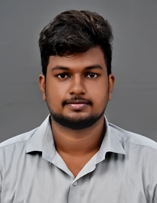

About Me

A highly motivated master's student currently doing his master's with 1.5 years of hands-on experience in nonlinear FEM, material point modelling, numerical simulations, and parallel computing. Skilled in Python, C++, and MATLAB, I also specialize in the development and automation of simulation workflows and FEM models for mechanical applications.
Experience
Simulation Intern – Liebherr GmbH, Rostock (Apr 2025 – Present)
- 3D CAD modeling of crane components using Creo
- Linear/nonlinear FEM analysis using ANSYS Mechanical
- Fatigue and stress evaluation according to FKM
- Reporting for design and testing decisions
Research Assistant – TU Freiberg (Oct 2023 – Nov 2024)
- Small-punch test simulations for material characterization
- Developed parameter optimization routines
- Automated data processing, 50% efficiency gain
- Documented subroutines in LaTeX
Projects
Stress Corrosion FEM Simulation (May 2024 – Oct 2024)
Coupled mechanics, phase-field, and diffusion models to simulate crack growth. Validated against cylinder and pencil electrode tests using FEniCSx.
Parallel SIR Disease Simulation (Jan 2025 – Feb 2025)
Implemented parallel disease spread models using MPI (Python) and OpenMP (C++). Performed scaling analyses on HPC clusters.
Skills
- Simulation Tools: ANSYS, ABAQUS, FEniCSx, Paraview
- Programming: Python, C++, MATLAB
- Mesh Tools: ANSA, Hypermesh
- Other: Git, LaTeX, MS Office
- Languages: English, German, Tamil
Contact
Email: akashkumaralfred@gmail.com
Phone: +49 1575 8303163
LinkedIn: akashkumar56